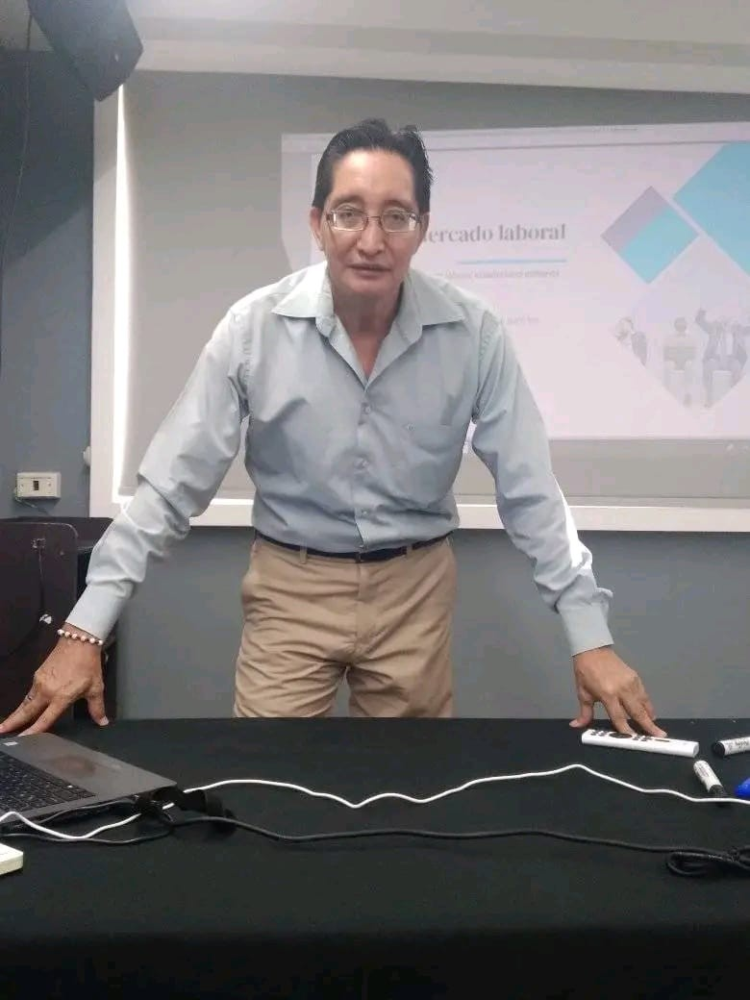
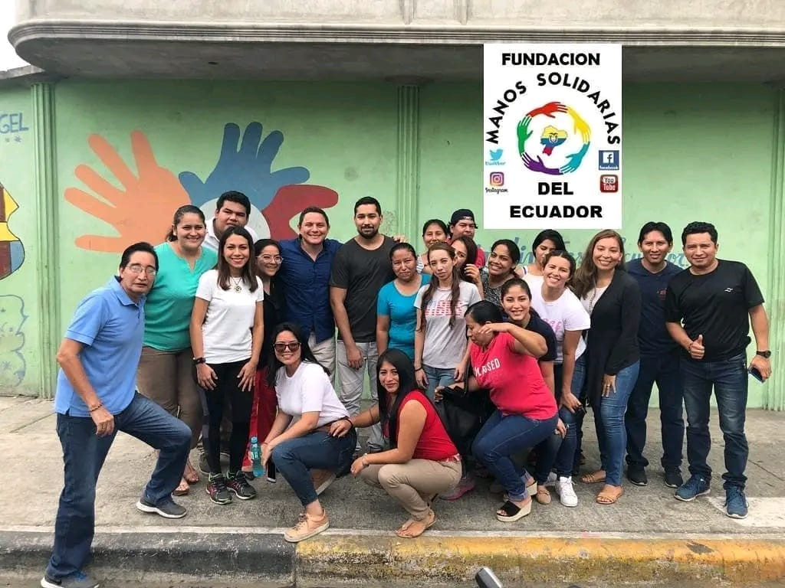
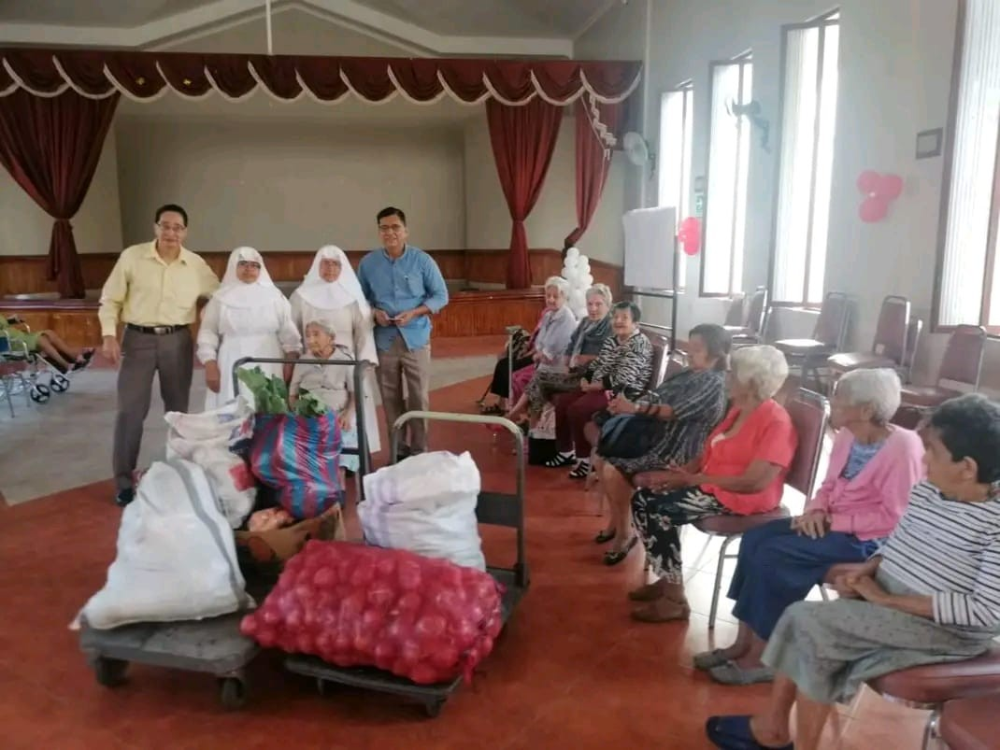

Solidaridad que transforma el Ecuador
Somos una organización sin fines de lucro dedicada a ayudar a nuestra sociedad en todos sus ámbitos sociales. Tu aporte construye un futuro lleno de esperanza.
Conoce más de nosotrosSomos una organización sin fines de lucro dedicada a ayudar a nuestra sociedad en todos sus ámbitos sociales. Tu aporte construye un futuro lleno de esperanza.
Conoce más de nosotrosManos Solidarias del Ecuador nace de la profunda convicción de que nadie debe quedarse atrás. Somos una organización sin fines de lucro enfocada en brindar apoyo integral a los sectores más vulnerables de nuestra sociedad.
Nuestra labor abarca todos los ámbitos sociales: desde la alimentación y la salud, hasta la educación y el empoderamiento comunitario. Creemos firmemente que, uniendo esfuerzos, podemos construir un tejido social más fuerte, equitativo y lleno de oportunidades para cada familia ecuatoriana.

Personas comprometidas al 100% con el desarrollo social de nuestro país.

"Nuestra misión nació con un objetivo claro: transformar vidas. Llevo más de 15 años trabajando por el desarrollo social de Ecuador, convencido de que la solidaridad, la transparencia y el trabajo duro son el verdadero motor del cambio en nuestra sociedad."
Áreas fundamentales donde concentramos nuestros esfuerzos para generar un impacto real y sostenible.
Llevamos alimentos de primera necesidad y asistencia nutricional a comunidades vulnerables para combatir la desnutrición infantil.
Proporcionamos kits escolares, tutorías y apoyo educativo para que ningún niño y joven deba abandonar sus estudios por falta de recursos.
Organizamos brigadas médicas para brindar atención preventiva, medicamentos y charlas de salud en zonas populares y rurales.
Un vistazo a nuestras últimas brigadas, entregas y eventos en la comunidad.




Historias reales de personas cuyas vidas han sido tocadas por la fundación.
"Gracias a la fundación, mis tres hijos recibieron kits escolares a tiempo para iniciar clases este año. Es una gran bendición para nosotros porque la situación ha estado muy dura."
"Las brigadas médicas nos han salvado. En nuestro sector a veces es difícil conseguir atención rápida o comprar medicinas, pero ustedes siempre llegan cuando más se necesita."
"Los talleres de emprendimiento y el apoyo con alimentos nos dieron la fuerza para seguir adelante. Sentir que no estamos solos nos motiva a mejorar cada día por nuestras familias."
Escríbenos por WhatsApp. Te respondemos en minutos, te explicamos cómo donar y te confirmamos el impacto de tu aporte.
Tu aporte económico es transparente y va directamente a sostener nuestros pilares sociales en Ecuador.
Serás redirigido a una plataforma segura para completar tu aporte con tarjeta de crédito o débito.
Donar de Forma SeguraAceptamos todas las tarjetas
🔒 En caso de tener inconvenientes, nos contactaremos contigo para coordinar tu donación de forma segura.
O transfiere directamente: RUC: 0993050008001
🏦 Banco Internacional (Cta. Corriente)
Cuenta N° 1000628550 | SWIFT: BINTECEQ
🏦 BanEcuador (Cta. Ahorros)
Cuenta N° 4010419605
Únete a nuestra red. Dona tu tiempo y talento para cambiar realidades.